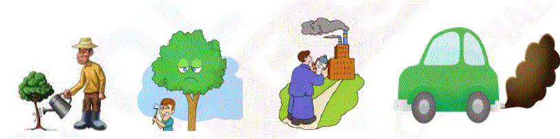

<!DOCTYPE html>
<html>
<head>
	<meta charset="UTF-8">
	<link href="../css/style_mock.css" rel="stylesheet" />
</head>
 <body>
<script type="text/javascript" src="../../mock_code.js"></script>
<script>

//todo - Read question from notepad
var questions = [
["Which part of our body helps us to hear a bell.","Eye","Skin","Ear","Nose","C"],
["  is a living thing because ______.","It grows","It can make more money plants","It breathes","All of these","D"],
["A family which has many members is called a _________.","happy family","big family","small family","all of these","B"],
["Kids love to play with which of the following animals?","Dog","Rabbit","Giraffe","Both (a) and (b)","D"],
["Which of the following is the correct order from the tallest to the shortest? <BR>","Sohan, Ella, Mona, Sona","Sona, Sohan, Ella, Mona","Ella, Mona, Sona, Sohan ","Mona, Sona, Sohan, Ella","A"],
["Which activity is good for environment - <BR>","Planting Trees","Cutting Trees","Pollution","Vehicle Pollution","A"],
["Look at the picture and complete the following sentence. Always cross the road at __________ crossing.<br>","Horse","Zebra","Footpath","Road","B"],
["Following is an example of  - ","Living thing","Non - living thing ","Both","None","B"],
["Which of the following part helps in the food synthesis","Stem","Roots","Seeds","Leaves","D"],
["The place where animals lives naturally is called its______.","Habitat","Adaptation","Climate","All of these","A"],
["Living things - ","Cannot feel","Cannot move","Reproduce","Cannot breathe","C"],
["Riddhima observes an unknown object,it moves, grows and dies.the object is  -","Artificial things","Non-Living things","Living things","Man-made things","C"],
["<BR>After 1 year whose size would remain same","Baby Boy","Puppy","Plant","Robot","D"],
[ "Which of the following is the living thing?","Bag","Neem Tree","Tomato","Water","B"],
["Which of the following is an example of vegetable? ","","","","","B"],
["What would be suitable heading for X in the following chart - <BR>","How they grow","How they are useless for us","How they are usefull to us ","How they are harmless to us","C"],
["Which of the following items we get from plants?","Wood","Fruits","Pulses","All of these","D"],
["Plants prepare their own _______","Water","Air","Food","Oxygen","C"],
["Plants breathe through _________ present on their leaves","holes","stomata","circles","pores","B"],
["Following is created  - ","Humans","Robots","Nature","None","C"],
["________ things respond and adapt to their environment.","Natural","Living","Non-Living","None","B"],
["The Sun appears to sets in the ____________.","East","West","North","South","B"],
["Animals who can live both land and water - ","Frog","Lion","Elephant","Lizard","A"],
["Which gas is present in atmosphere in maximum quantity","OXYGEN","CARBON DIOXIDE","HELIUM","NITROGEN","D"],
["Roots are commonly found - ","Under the ground","Above the ground","Floating on the air","Under water","A"],
["Which body is used to eat food.","","","","","C"],
["Which of the following statements is INCORRECT?","We cannot feel air but we can see it.","Moving air is called wind.","Air takes up space.","All of these","A"],
["I  am green and small. I can make you cry. I am a _______.","Pea","Chilly","Ladyfinger","Spinach","B"],
["Which of the following represents a non-living thing?","Amoeba","Paramecium","Hyena","Foot Ball","D"],
["Which of the following to see face","","","","","D"],
["Hair oil is obtained from ","","","","","D"],
["Day to day change in atmosphere is called - ","Climate","Weather","Season","None","B"],
["White and black stripes on road is called - <BR> ","Dog Crossing","Cat Crossing","Zebra Crossing","None","C"],
["Sweater are worn in which season - - <BR> ","summer","rainy","winter","None","C"],
["Which of the following is not fruit -  ","","","","","D"],

]


</script>
<table><tr>
  <td class="timer-pic"></td><td class="timer-text"><p id="demo" ></p></td> 
</tr>
</table>
<h2 id="test_status"></h2>
<div id="test"></div>
</body>
</html>
